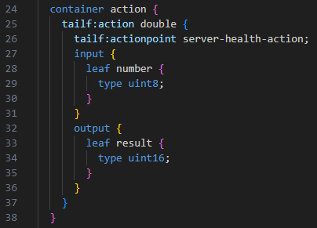
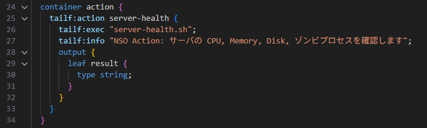
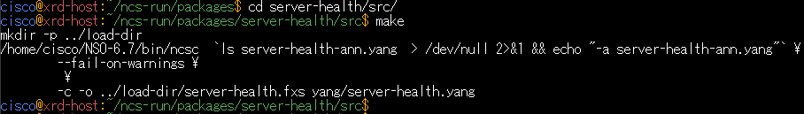
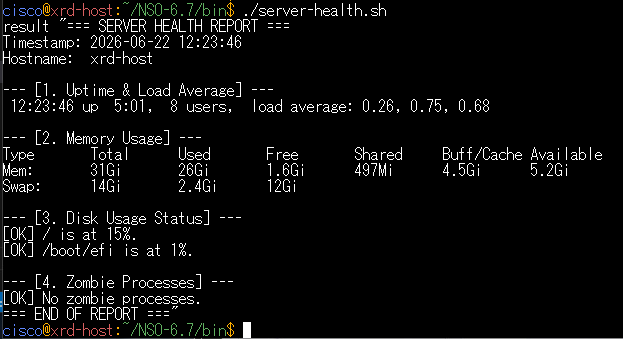
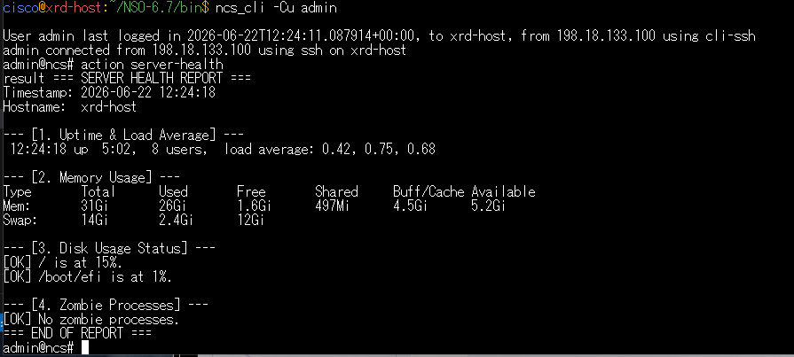
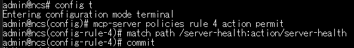
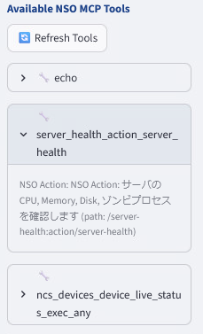
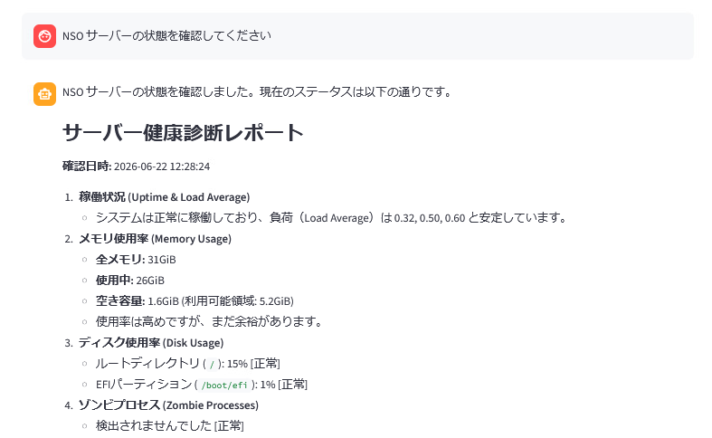

余裕のある方:アクション Tools の定義
このシナリオはオプションです。余裕のある方はぜひ挑戦してみてください。
学習目標
このラボを完了すると、以下のことができるようになります。
- カスタム Action を定義し、それを MCP Tools として利用できます
- Action スクリプトを編集し、NSO サーバの状態を自然言語で確認できるようになります
前提条件
- NSO のパッケージ作成方法を理解していること
- NSO の Action （コンフィグ設定ではなくコマンド実行）を理解していること
- NSO MCP ポリシーを理解していること
カスタム Action の定義
NSO はデバイスのコンフィグを管理するオーケストレーターです。 しかしコンフィグの設定管理だけでなく、show コマンドなどの実行も可能です。 NSO ではそうしたコマンドの実行を Action と呼びます。
Action についてさらに詳しく知りたい方は、弊社カスタマーサクセスチームが実施したウェビナーおよび過去のハンズオンをご参照ください。
カスタム Action パッケージの作成
Linux で下記のコマンドを実行しカスタムパッケージを作ります。
cd
cd ncs-run/packages
ncs-make-package --service-skeleton python --action-example server-health
次にパッケージの YANG を編集し、外部スクリプトを実行するようにします。 デスクトップにある VSCode を開くと自動で NSO サーバに接続しますので、 ncs-run/packages/server-health/src/yang にある server-health.yang を編集します。

以下のように変更します。 - 25 行目の Action 名 double を server-health に変更 - 26 行目の tailf:actionpoint を tailf:exec に変えスクリプト名 server-health.sh を指定 - 27-31 行の input は不要なので削除 - 34 行目 output の型を string にします - 26 行目 tailf:exec の次の行に tailf:info を追加、MCP Tools としての description を記載します

その後 Linux で make します。
cd server-health/src
make

NSO にログインしパッケージリロードをします。
ncs_cli -Cu admin
packages reload
実行スクリプトの設置
VSCode で NSO-6.7/bin に server-health.sh という名前で下記のスクリプトを作成・保存します。
#!/usr/bin/bash
# すべての出力を一度変数に格納し、最後に一括で出力します
REPORT=$(cat << EOF
=== SERVER HEALTH REPORT ===
Timestamp: $(date '+%Y-%m-%d %H:%M:%S')
Hostname: $(hostname)
--- [1. Uptime & Load Average] ---
$(uptime)
--- [2. Memory Usage] ---
$(free -h | awk '
NR==1 {print "Type Total Used Free Shared Buff/Cache Available"}
NR==2 {printf "Mem: %-10s %-10s %-10s %-10s %-10s %-10s\n", $2, $3, $4, $5, $6, $7}
NR==3 {printf "Swap: %-10s %-10s %-10s\n", $2, $3, $4}
')
--- [3. Disk Usage Status] ---
$(df -h | grep -E '^/dev/' | while read -r line; do
usage=$(echo "$line" | awk '{print $5}' | sed 's/%//')
mount=$(echo "$line" | awk '{print $6}')
if [ "$usage" -ge 90 ]; then
echo "[CRITICAL] $mount is at ${usage}%! Details: $line"
elif [ "$usage" -ge 80 ]; then
echo "[WARNING] $mount is at ${usage}%. Details: $line"
else
echo "[OK] $mount is at ${usage}%."
fi
done)
--- [4. Zombie Processes] ---
$(zombies=$(ps aux | awk '{if ($8 == "Z") print $0}' | wc -l)
if [ "$zombies" -gt 0 ]; then
echo "[WARNING] $zombies zombie process(es) detected."
else
echo "[OK] No zombie processes."
fi)
=== END OF REPORT ===
EOF
)
# MCP Toolのテキスト出力として、1つの文字列（result）に流し込める形式で出力
echo result '"'"$REPORT"'"'
その後 Linux で実行属性をつけます。
cd
cd NSO-6.7/bin
chmod +x server-health.sh
スクリプトを実行し、サーバの情報が出力されることを確認します。

MCP で動作確認
まず NSO で action server-health を実行し、NSO からスクリプトが呼べることを確認します。

次にこのパッケージを MCP Tools として公開します。 下記の設定を NSO で行います。
config
mcp-server policies rule 4 action permit
match path /server-health:action/server-health

WebUI で Refresh Tools を実行し、server-health が使えるようになっていることを確認します。

実際に以下のように質問し、サーバの状態を MCP 経由で調べることができるか確認します。
NSOサーバの状態を確認してください

server-health パッケージは下記から clone して使うことも可能です。
確認
ここまでの手順で、以下の状態になっているはずです。
- server-health パッケージが正常に読み込まれていること
- WebUI 経由で NSO サーバの状態を確認できるようになっていること
トラブルシューティング
- WebUI が500 エラーになる — API がタイムアウトしています。frontend, backend を両方とも Ctrl+C で一度終了して再度起動してください
次のステップ
以上で NSO MCP ハンズオンは終了です。お疲れ様でした！